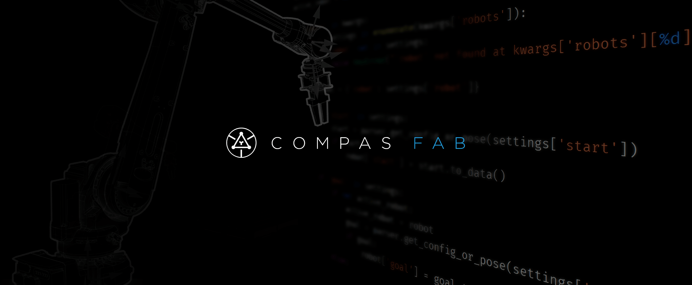

Robotic Fabrication for COMPAS
Robotic fabrication package for the COMPAS Framework facilitating the planning and execution of robotic fabrication processes. It provides interfaces to existing software libraries and tools available in the field of robotics (e.g. OMPL, ROS) and makes them accessible from within the parametric design environment. The package builds upon COMPAS, an open-source Python-based framework for collaboration and research in architecture, engineering and digital fabrication.